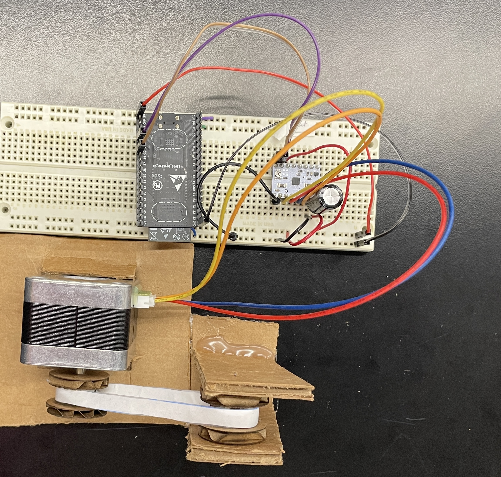
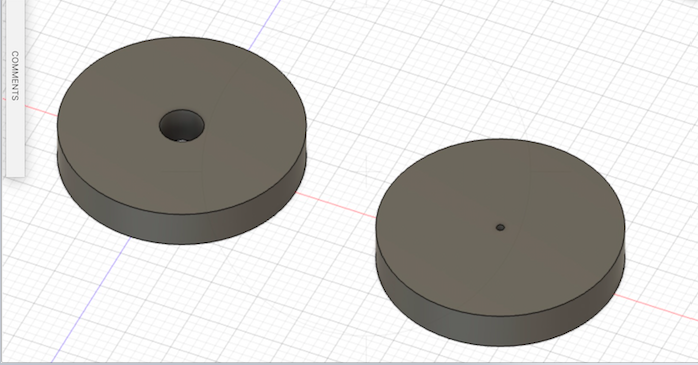

# Week 10: Machine Building and End Effectors
## Goal: Build a conveyer belt (translate rotational motion to angular motion)
### Circuit:
I made the following circuit to power the stepper motor:
*the wiring and diagram were taken from the page in the [class website](https://nathanmelenbrink.github.io/lab/machine/drv8834.html) for my motor driver, the DRV8834.
Diagram:
<img src="Driver.png" alt="circuitdiagram" style="width:598px;height:273px;">
Actualized:

### Assembling the Mechanism:
I used carboard, mostly cut with exacto knives to build the conveyor belt. I cut the base to stabilize the stepper motor, and then the pillars and base for the far side of the belt.
However, I laser cut the circles that are stuck on the sides of the foam. Their function is to prevent the belt from escaping it's bounds and disturbing the belt's motion. Here are links to the file I used to design them, and screenshots of the sketches:

[File Link](https://a360.co/3PzuJ4z)
The actual spinning pulleys are made of foam circles, with holes in the center. The first has a hole that attaches it to the spinning arm of the stepper motor, and the second has a small hole through the middle that I threaded armature wire through to attach it to the base.
The belt is made of a thinly sliced piece of lined paper, reinforced with scotch tape to reduce friction and bolster belt's strength.
I then assembled the pieces using hot glue, and threaded the belt around the pulleys and attached it to itself using some more scotch tape.
Here are images of the process and final result:
<video width="262" height="500" controls>
<source src="1b3099d7-3e4d-4217-99d3-7a02c138ea8c-1-9273ea7a-6a83-477a-97c0-74206419d3f3.mp4" type="video/mp4">
</video>
PICTURES HERE
### Code:
I took the code from the class website's page on my motor driver, and really didn't make modifications and the goal of this assignment was to make a machine using a stepper motor, not programming the machine.
Also I found it useful to use the code that kept the motor's acceleration and speed random to see how my conveyer belt would deal with these changes and test it's robustness.
Here is the code:
<pre><code class="language-arduino">
#include <AccelStepper.h>
const int stepPin = 13;
const int dirPin = 12;
// Define a stepper and the pins it will use
AccelStepper stepper(1, stepPin, dirPin); // initialise accelstepper for a two wire board
void setup()
{
//no setup necessary
}
void loop()
{
if (stepper.distanceToGo() == 0)
{
// Random changes to speed, position and acceleration
// Adding one to the random value ensures we don't get a value of 0 for speed or accelerations
delay(1000);
stepper.moveTo(rand() % 1000);
stepper.setMaxSpeed((rand() % 1000) + 1);
stepper.setAcceleration((rand() % 1000) + 1);
}
stepper.run();
}
</code></pre>
### Calibration:
*Ask suvin again if this is enough
### Final Product:
Here is a video of the final result!
<video width="262" height="500" controls>
<source src="afd2d07f-3360-448a-8496-6b51f50ae522-0-a798b928-e447-41dc-bdd1-412a415bf1e1.mp4" type="video/mp4">
</video>

And here is a [link](../index.html).